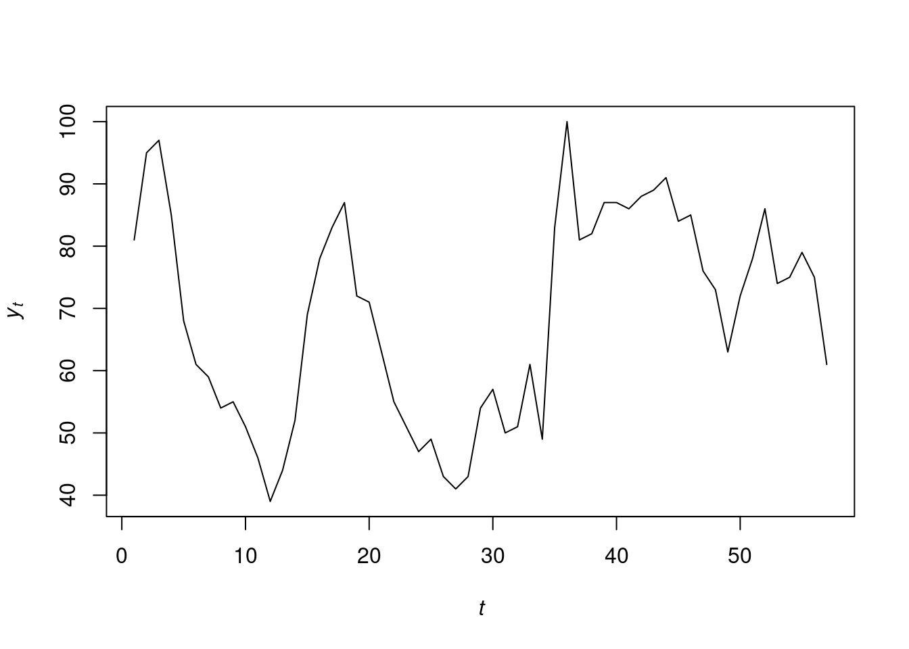
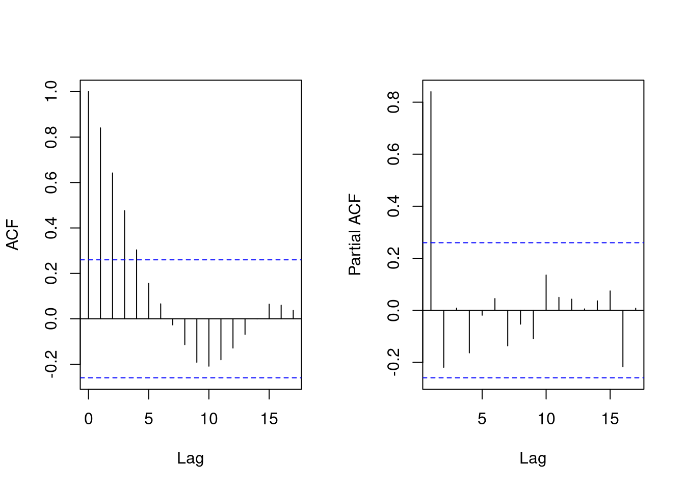

earthquakes.dat <-read.delim("./data/earthquakes.txt")earthquakes.dat$Quakes =as.numeric(earthquakes.dat$Quakes)y.dat=earthquakes.dat$Quakes[1:100] ## this is the training datay.new=earthquakes.dat$Quakes[101:103] ## this is the test dataplot.ts( y.dat,ylab =expression(italic(y)[italic(t)]),xlab =expression(italic(t)),main ="")
We check the ACF and PACF:
par(mfrow =c(1, 2))acf(y.dat, main ="", xlab ="Lag")pacf(y.dat, main ="", xlab ="Lag")
6.1.2 Estimate the model order
We now set the maximum AR order, \(p^{*} = 10\), and since \(T = 100\), we use the last \(T - p = 90\) observations for the analysis. We plot the AIC and BIC for different values of \(p\):
n.all =length(y.dat)p.star =10Y =matrix(y.dat[(p.star +1):n.all], ncol =1)sample.all =matrix(y.dat, ncol =1)n =length(Y)p =seq(1, p.star, by =1)design.mtx =function(p_cur) { Fmtx =matrix(0, ncol = n, nrow = p_cur)for (i in1:p_cur) { start.y = p.star +1- i end.y = start.y + n -1 Fmtx[i,] = sample.all[start.y : end.y, 1] }return(Fmtx)}criteria.ar =function(p_cur) { Fmtx =design.mtx(p_cur) beta.hat=chol2inv(chol(Fmtx%*%t(Fmtx)))%*%Fmtx%*%Y R=t(Y-t(Fmtx)%*%beta.hat)%*%(Y-t(Fmtx)%*%beta.hat) sp.square=R/(n-p_cur) aic=2*p_cur+n*log(sp.square) bic=log(n)*p_cur+n*log(sp.square) result=c(aic,bic)return(result)}criteria =sapply(p, criteria.ar)plot(p, criteria[1,], type ="p", pch ="a", col ="red", xlab ="AR order p", ylab ="Criterion", main="", ylim =c(min(criteria) -10, max(criteria) +10))points(p, criteria[2,], pch ="b", col ="blue")
covid.dat <-read.delim("./data/GoogleSearchIndex.txt")covid.dat$Week=as.Date(as.character(covid.dat$Week),format ="%Y-%m-%d")y.dat=covid.dat$covid[1:57] ## this is the training datay.new=covid.dat$covid[58:60] ## this is the test dataplot.ts( y.dat,ylab =expression(italic(y)[italic(t)]),xlab =expression(italic(t)),main ="")

We check the ACF and PACF:
par(mfrow =c(1, 2))acf(y.dat, main ="", xlab ="Lag")pacf(y.dat, main ="", xlab ="Lag")

6.2.2 Estimate the model order
We now set the maximum AR order, \(p^{*} = 10\), and since \(T = 57\), we use the last \(T - p = 47\) observations for the analysis. We plot the AIC and BIC for different values of \(p\):
n.all =length(y.dat)p.star =10Y =matrix(y.dat[(p.star +1):n.all], ncol =1)sample.all =matrix(y.dat, ncol =1)n =length(Y)p =seq(1, p.star, by =1)## The functions are already defined above, ## no need to repeat ourselves here!# design.mtx = function(p_cur) {...}# criteria.ar = function(p_cur) {...}criteria =sapply(p, criteria.ar)plot(p, criteria[1,], type ="p", pch ="a", col ="red", xlab ="AR order p", ylab ="Criterion", main="", ylim =c(min(criteria) -10, max(criteria) +10))points(p, criteria[2,], pch ="b", col ="blue")